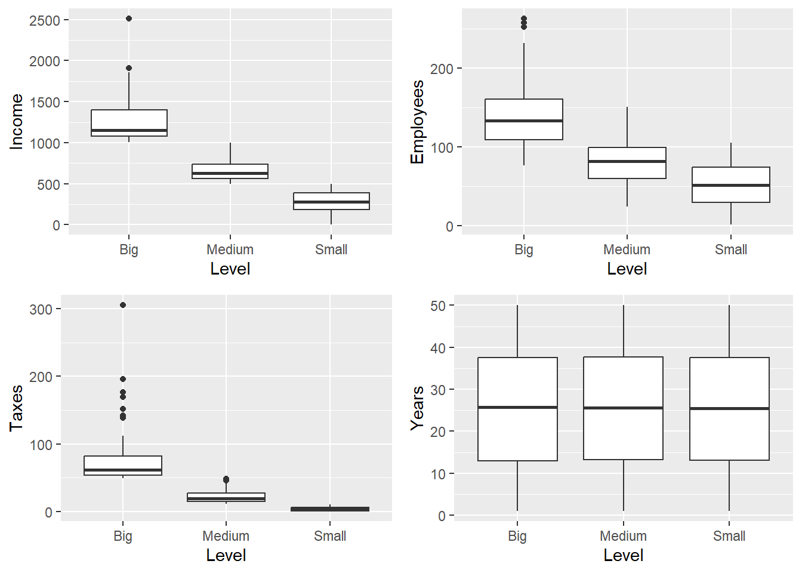
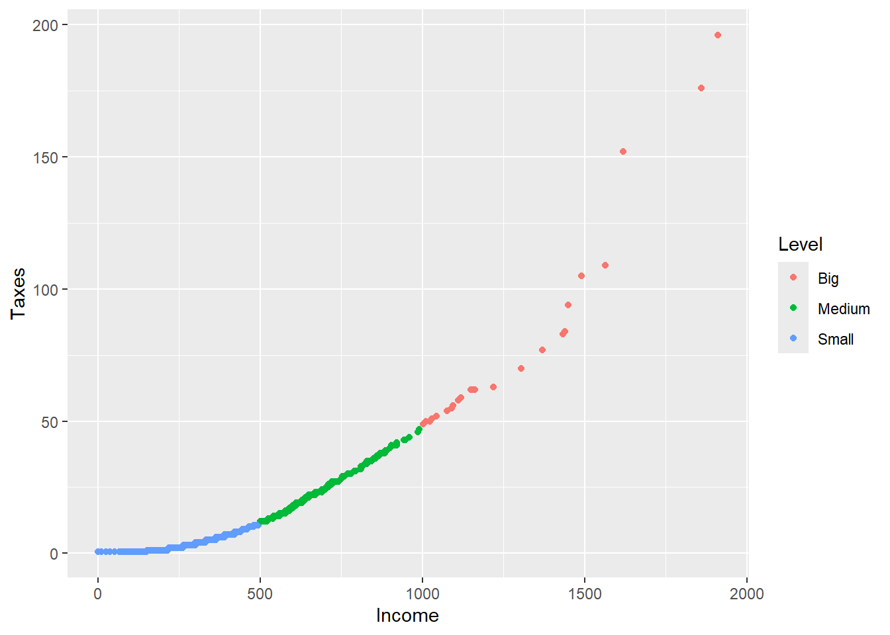

U1 <- c("Erik", "Sharon")
N1 <- length(U1)
U2 <- c("Yves", "Ken", "Leslie")
N2 <- length(U2)5 Muestreo estratificado
La estratificación es una de las técnicas más difundidas y usadas en muestreo puesto que tiene funcionalidades estadísticas y administrativas que la hacen atractiva: permite tratar con subpoblaciones, aumenta la eficiencia de las estimaciones y contribuye a la administración eficiente de grandes encuestas.
Valliant et al. (2000)
En algunas ocasiones, la característica de interés tiende a tomar distintos valores promedio con respecto a subgrupos poblacionales. De alguna manera, si la población tiene un comportamiento diferente en estos subgrupos, es posible mejorar la precisión de las estimaciones tomando muestras independientes en cada uno de los subgrupos poblacionales. Lo anterior es intuitivo cuando entre los subgrupos existe mucha variabilidad, pero dentro de ellos la variabilidad es constante.
En general, cuando existe en el marco de muestreo información auxiliar que permite la división de la población en \(H\) subgrupos con el objetivo de seleccionar una muestra en cada subgrupo, se dice que la estrategia de muestreo utiliza un diseño de muestreo estratificado y el nombre de los subgrupos, formados antes de la recolección de la información, se denomina estratos. Nótese la diferencia con los subgrupos poblacionales llamados dominios, en donde la partición de la población se realiza después de la recolección de la información.
Con frecuencia, tenemos información adicional que nos ayuda a diseñar la estrategia de muestreo. Cuando esta información se refiere a la pertenencia de cada uno de los elementos a un subgrupo, podemos aplicar una estrategia que utilice un diseño de muestreo estratificado. No es solamente la disponibilidad de esta información auxiliar la que nos lleva a utilizar un diseño de muestreo estratificado, además de esto: - La variable de interés asume distintos valores promedio en diferentes sub-poblaciones. - De una u otra forma (proceso logístico y/o de recolección de datos) es mejor estratificar y dividir la población en particiones. Lehtonen y Pahkinen (2003) afirman que algunas variables típicas de estratificación son de tipo regional (municipio, estado o provincia), demográfico (género o grupo de edad) y socioeconómico (grupo de ingresos). Existen censos, en periodos anteriores que pueden contener esta valiosa información.
La necesidad de estratificar1 la población surge por una o más de las siguientes razones: - Por razones administrativas. Existen marcos de muestreo que ya tienen dividida la población en subgrupos formados naturalmente. - Se desea garantizar que la muestra seleccionada sea representativa con respecto al comportamiento de la población según la información auxiliar. Al seleccionar una muestra aleatoria simple de una población de personas, podría suceder que la muestra seleccionada no incluyera a ningún hombre. - Se requieren estimativos con alta precisión discriminados para cada sub-población. Aumentar el tamaño de muestra en los estratos menos representados. - Menor Coste. Distintos esquemas operativos para diversos estratos. Encuestas por correo para empresas grandes. Menor tamaño de muestras en zonas de tolerancia o zonas de difícil manejo del orden público. - Reducción de la varianza en la estimación. Personas de distintas edades con distintas presiones sanguíneas (estratificar por grupos de edad). Se reduce la varianza pues los estratos son homogéneos por dentro, pero heterogéneos entre sí.
El objetivo del diseño estratificado es dar un tratamiento particular a cada subgrupo, ya sea por razones económicas, administrativas o logísticas. Es indispensable delimitar bien los subgrupos en la etapa de diseño. Por ejemplo, en un estudio dentro de una universidad, si se quiere averiguar el número de horas que los estudiantes permanecen enfrente de un computador, no es una buena idea (defecto técnico) dividir la población en cursos porque los cursos no brindan una partición de la población, dado que en distintos cursos pueden estar los mismos estudiantes.
5.1 Fundamentos teóricos
Suponga que el marco de muestreo es tal que permite conocer la pertenencia de cada elemento de la población \(U\) en \(H\) sub-grupos poblacionales separados \(U_h\) (\(h=1,2,\ldots,H\)) también llamados estratos. Éstos se definen como grupos de elementos mutuamente excluyentes. Cada elemento puede pertenecer a uno y sólo a un estrato. De tal forma que - \(\bigcup_{h=1}^H U_h=U\) - \(U_h\bigcap U_i = \emptyset \ \ \ \ \ \ \ h\neq i\)
Cada estrato \(U_h\) es de tamaño \(N_h\), por tanto \[ \sum_{h=1}^HN_h=N \]
Con la población dividida en \(H\) estratos, el objetivo sigue siendo estimar los siguientes parámetros poblacionales - El total poblacional, \[ t_y=\sum_{k \in U}y_k=\sum_{h=1}^H\sum_{k\in U_h}y_k=\sum_{h=1}^Ht_{yh} \] donde \(t_{yh}=\sum_{k\in U_h}y_k\) - La media poblacional, \[ \bar{y}=\frac{\sum_{k \in U}y_k}{N}=\frac{1}{N}\sum_{h=1}^H\sum_{k\in U_h}y_k=\frac{1}{N}\sum_{h=1}^HN_h\bar{y}_h \] donde \(\bar{y}_h=\dfrac{1}{N_h}\sum_{k\in U_h}y_k\)
Sampath (2001) afirma que dependiendo de la naturaleza de los estratos, diferentes estrategias de muestreo pueden ser utilizadas en diferentes estratos. De tal forma que, en ausencia de información auxiliar, se utilice una estrategia aleatoria simple en algunos estratos, mientras que para aquellos sub-grupos tales que el marco de muestreo permita el conocimiento de información auxiliar continua, es posible aplicar una estrategia de muestreo proporcional al tamaño, e incluso para aquellos sub-grupos en los que, por obligación (logística o técnica), se deba aplicar un censo.
Es importante aclarar que la selección de las \(H\) muestras es realizada de manera independiente en cada estrato.2 De tal forma que la muestra aleatoria \(S\)3 queda definida por \[ S=\bigcup_{h=1}^HS_h. \]
En particular, si la muestra seleccionada es \(s\), entonces \[ s=\bigcup_{h=1}^Hs_h. \]
Nótese que si el tamaño de muestra en cada estrato es igual a \(n_h\), entonces el tamaño de la muestra seleccionada mediante un diseño de muestreo estratificado es \[ n=\sum_{h=1}^Hn_h. \]
Así, para cada estrato \(h \ \ \ h=1,\ldots,H\) existe un conjunto de todas las posibles muestras denotado como soporte del estrato \(h\), o \(Q_h\). Cada uno de los soportes \(Q_h\) induce la definición del soporte general de la siguiente manera \[ Q^H=\bigtimes_{h=1}^HQ_h. \]
En donde \(\bigtimes\) denota el operador de producto cartesiano4. La cardinalidad de cada soporte \(Q_h\) depende del diseño de muestreo utilizado en la selección de la muestra del estrato \(h\). Así \[ \#Q^H=\prod_{h=1}^H\#Q_h. \]
Por supuesto, el diseño de muestreo estratificado es un autentico diseño de muestreo como lo enuncian los siguientes resultados.
TipResultado
Siendo \(p_1(s_1),p_2(s_2),\ldots,p_H(s_H)\) los diseños de muestreo utilizados en cada estrato \(h \ \ \ h=1,\ldots,H\), entonces el diseño de muestreo estratificado se define como \[ p(s)=\prod_{h=1}^Hp_h(s_h) \tag{5.1}\]
Prueba.
Se tiene que \[ \begin{align*} p(s)&=Pr(\text{Seleccionar $s_1$ de $U_1$, $\cdots$, Seleccionar $s_H$ de $U_H$,})\\ &=p_1(s_1)\cdots p_H(s_H), \end{align*} \] puesto que el proceso de selección es independiente en cada estrato.
TipResultado
El diseño de muestreo estratificado cumple que - \(p(s)\geq0\) para todo \(s\in Q\) - \(\sum_{s\in Q}p(s)=1\)
Prueba.
La primera propiedad se tiene de inmediato puesto que todas las expresiones en la ecuación 5.1 son mayores o iguales a cero. La segunda propiedad se tiene por inducción matemática sobre el número de estratos. - Si \(H=2\) existen dos soporte, uno para cada estrato, \(Q_1\) definido como \[ Q_1=\left\{s_{11},s_{12},\ldots,s_{1H_1}\right\} \] y \(Q_2\) definido como \[ Q_2=\left\{s_{21},s_{22},\ldots,s_{2H_2}\right\} \] tales que \[ Q^2=\left\{s_{11}\bigcup s_{21},s_{11}\bigcup s_{22},\ldots,s_{11}\bigcup s_{2H_2},\ldots, s_{1H_1}\bigcup s_{2H_2} \right\} \]
Ahora, como la selección de las muestras se realiza en forma independiente, en particular se tiene que \[ p\left(s_{11}\bigcup s_{21}\right)=p(s_{11})p(s_{21}) \]
de manera análoga para el elemento que pertenezca al soporte. Ahora, \[ \begin{align*} \sum_{s\in Q}p(s)&=p(s_{11})p(s_{21})+p(s_{11})p(s_{22})+\ldots+p(s_{11})p(s_{2H_2})+\\ &\ldots+p(s_{1H_1})p(s_{21})+p(s_{1H_1})p(s_{22})+\ldots+p(s_{1H_1})p(s_{2H_2})\\ &=p(s_{11})[\underbrace{p(s_{21})+p(s_{22})+\ldots+p(s_{2H_2})}_{1}]+\\ &\ldots+p(s_{1H_1})[\underbrace{p(s_{21})+p(s_{22})+\ldots+p(s_{2H_2})}_{1}]\\ &=p(s_{11})+\ldots+p(s_{1H_1})\\ &=1 \end{align*} \] - Si \(H=k\), se supone que \[ \sum_{s\in Q^k}p(s)=1 \] donde \[ Q^k=\left\{\bigcup_{h=1}^ks_h\ \ \ | \ \ s_h\in Q_h\right\}. \] - Si \(H=k+1\), se tienen \(k+1\) soportes tales que \[ \begin{split} Q_1&=\left\{s_{11},s_{12},\ldots,s_{1H_1}\right\}\\ \vdots\\ Q_k&=\left\{s_{k1},s_{k2},\ldots,s_{kH_k}\right\}\\ Q_{k+1}&=\left\{s_{k+1,1},s_{k+1,2},\ldots,s_{k+1,H_{k+1}}\right\} \end{split} \] Por consiguiente se tiene que \[ \begin{align*} \sum_{s\in Q}p(s)&=p(s_{k+1,1})\left[\underbrace{\sum_{s\in Q^k}p(s)}_{1}\right] +\ldots+p(s_{k+1,1H_{k+1}})\left[\underbrace{\sum_{s\in Q^k}p(s)}_{1}\right]\\ &=p(s_{k+1,1})+\ldots+p(s_{k+1,H_{k+1}})\\ &=1 \end{align*} \]
5.1.1 Estimación en el muestreo estratificado
Si uno de los propósitos de la estratificación es obtener estimaciones más precisas, cabe preguntarse qué forma toman los estimadores y cómo definirlos a través de los estratos; pero aun más ¿qué forma toma la varianza del estimador en los estratos y su varianza estimada?. Los siguientes resultados, responden a los anteriores cuestionamientos.
TipResultado
Si \(\hat{t}_{yh}\) estima insesgadamente el total de la característica de interés \(t_{yh}\) del subgrupo poblacional \(h\) con varianza igual a \(Var(\hat{t}_{yh})\), entonces un estimador insesgado para el total poblacional \(t_y\) está dado por \[ \hat{t}_y=\sum_{h=1}^H\hat{t}_{yh} \]
el cual tiene una varianza igual a \[ Var(\hat{t}_y)=\sum_{h=1}^HVar(\hat{t}_{yh}) \]
Prueba.
Dado que \(\hat{t}_{yh}\) es insesgado, tenemos que \[ \begin{align*} E\left(\sum_{h=1}^H\hat{t}_{yh}\right)&=\sum_{h=1}^HE\left(\hat{t}_{yh}\right)\\ &=\sum_{h=1}^Ht_{yh}=t_y \end{align*} \]
Por otro lado, acudiendo a la independencia de la selección de muestras en cada estrato
\[ \begin{align*} Var\left(\sum_{h=1}^H\hat{t}_{yh}\right)&=\sum_{h=1}^HVar\left(\hat{t}_{yh}\right)+ \sum_{h=1}^H\sum_{i=1}^H\underbrace{Cov\left(\hat{t}_{yh},\hat{t}_{yi}\right)}_{0}\\ &=\sum_{h=1}^HVar(\hat{t}_{yh}) \end{align*} \]
TipResultado
Si \(\widehat{Var}(\hat{t}_{yh})\) estima insesgadamente a \(Var(\hat{t}_{yh})\), entonces un estimador insesgado para \(Var(\hat{t}_{y})\) está dado por
\[ \widehat{Var}(\hat{t}_{y})=\sum_{h=1}^H\widehat{Var}(\hat{t}_{yh}) \]
Prueba.
La demostración es inmediata por el insesgamiento en cada uno de los estratos.
5.1.2 El estimador de Horvitz-Thompson
TipResultado
Para el diseño de muestreo estratificado, el estimador de Horvitz-Thompson, su varianza y su varianza estimada están dados por:
\[ \hat{t}_{y,\pi}=\sum_{h=1}^H \hat{t}_{yh,\pi} \] \[ Var_{EST}(\hat{t}_{y,\pi})=\sum_{h=1}^H Var_{p_h}(\hat{t}_{yh,\pi}) \] \[ \widehat{Var}_{EST}(\hat{t}_{y,\pi})=\sum_{h=1}^H \widehat{Var}_{p_h}(\hat{t}_{yh,\pi}) \]
donde \[ \hat{t}_{yh,\pi}=\sum_{k\in S_h}\dfrac{y_k}{\pi_k} \] Con \(Var_{p_e}(\hat{t}_{yh,\pi})\) es la varianza de \(\hat{t}_{yh,\pi}\) en el \(h\)-ésimo estrato y \(\widehat{Var}_{p_h}(\hat{t}_{yh,\pi}\) es la estimación de \(Var_{p_h}(\hat{t}_{yh,\pi})\) en el \(h\)-ésimo estrato.
NotaEjemplo
Nuestra población ejemplo \(U\) dada por
\[U=\{\textbf{Yves, Ken, Erik, Sharon, Leslie}\}\]
se divide en dos estratos de la siguiente forma
\[U_1=\{\textbf{Erik, Sharon}\}\]
y el segundo conformado por:
\[U_2=\{\textbf{Yves, Ken, Leslie}\}\]
En el primer estrato se selecciona una muestra aleatoria de tamaño \(n_1=1\) de acuerdo a un diseño de muestreo aleatorio simple sin reemplazo. Por otra parte, en el segundo estrato se selecciona una muestra de tamaño \(n_2=2\) de acuerdo al siguiente diseño de muestreo
\[ p_2(s)= \begin{cases} 1/4, &\text{si $s=\{\text{Yves, Ken}\}$},\\ 1/4, &\text{si $s=\{\text{Yves, Leslie}\}$},\\ 1/2, &\text{si $s=\{\text{Ken, Leslie}\}$.} \end{cases} \]
Realice el cálculo léxico-gráfico para comprobar el insesgamiento del estimador de Horvitz-Thompson para todas las posibles muestras de tamaño \(n=3\). Defina los soporte \(Q_1\) y \(Q_2\) así como el soporte general \(Q^2\) para cada estrato.
En las próximas secciones se estudiarán los diseños estratificados más utilizados en la práctica.
5.2 Diseño de muestreo aleatorio estratificado
Al igual que el muestreo aleatorio simple sin reemplazo, el diseño de muestreo aleatorio estratificado (EST-MAS) es el más sencillo de los diseños estratificados. En este caso particular se selecciona una muestra aleatoria simple en cada estrato, de tal forma que las selecciones sean independientes. Este diseño de muestreo es utilizado cuando la variabilidad de la característica de interés dentro de los estratos es similar; en otras palabras, cuando se sabe que el comportamiento de la característica de interés al interior de los estratos es homogéneo. Sin embargo, también se utiliza cuando no se dispone de ninguna información auxiliar continua que permita hacer uso de diseños de muestreo, en cada estrato, que permitan mejorar la eficiencia de una muestra aleatoria simple.
En cada estrato \(h\) una muestra aleatoria simple sin reemplazo de tamaño \(n_h\) es seleccionada, de manera independiente, de la población del estrato de tamaño \(N_h\). Aunque el diseño de muestreo aleatorio simple es utilizado como un método final de selección de elemento, en conjunto el diseño estratificado puede resultar dramáticamente más eficiente que utilizar un diseño de muestreo aleatorio simple sin dividir la población.
ImportanteDefinición
Para tamaños de muestra fijos en cada estrato, denotados como \(n_1,\ldots,n_H\), un diseño de muestreo se dice estratificado aleatorio simple sin reemplazo si la probabilidad de seleccionar una muestra de tamaño \(n\) está dada por \[ p(s)= \begin{cases} \prod_{h=1}^H\frac{1}{\binom{N_h}{n_h}}, &\text{si $\sum_{h=1}^Hn_h=n$}\\ 0, &\text{en otro caso} \end{cases} \]
Nótese que \(\sum_{s\in Q^H}p(s)=1\) porque \(\#Q^H=\prod_{h=1}^H\binom{N_h}{n_h}\).
5.2.1 Algoritmos de selección
En la selección de las muestras aleatorias simples sin reemplazo en cada estrato es posible utilizar los algoritmos de muestreo dados en el capítulo 3, de tal forma que los siguientes pasos se deben realizar. - Separar la población en \(H\) subgrupos o estratos mediante la caracterización poblacional de información auxiliar. - En cada estrato seleccionar una muestra aleatoria simple sin reemplazo. Los algoritmos utilizados en la selección de la muestra dentro de cada estrato pueden ser los métodos coordinado negativo o el método de selección y rechazo de Fan et al. (1962). - Cada una de las \(H\) selecciones es realizada de manera independiente
NotaEjemplo
Suponga que nuestra población de ejemplo \(U\) está particionada de acuerdo a la sección anterior. Es necesario definir los dos estratos en R, de manera tal que ningún elemento tenga una doble pertenencia a algún estrato.
R permite realizar operaciones entre conjuntos de datos. En particular, el operador union es utilizado para verificar que la unión de los estratos dé como resultado la población de ejemplo \(U\). Nótese que el tamaño poblacional es la suma de los tamaños de los dos estratos.
U <- union(U1,U2)
N <- N1+N2
U[1] "Erik" "Sharon" "Yves" "Ken" "Leslie"N[1] 5Se ha decidido seleccionar una muestra aleatoria simple sin reemplazo de tamaño \(n_1=1\) para \(U_1\) y una muestra aleatoria simple sin reemplazo de tamaño \(n_2=2\) para \(U_2\). De tal forma que la muestra general será de tamaño \(n=n_1+n_2=3\).
sam1 <- sample(N1, 1, replace=FALSE)
U1[sam1][1] "Sharon"sam2 <- S.SI(N2,2)
U2[sam2][1] "Ken" "Leslie"sam <- union(U1[sam1],U2[sam2])
sam[1] "Sharon" "Ken" "Leslie"Por supuesto, es posible utilizar la función sample que viene incorporada en el ambiente genérico de R o también es posible utilizar la función la función S.SI del paquete TeachingSampling. Sin importar el algoritmo de selección de las muestras aleatorias simples sin reemplazo, es importante notar que se han seleccionado tantas muestras como estratos existen en la población.
5.2.2 El estimador de Horvitz-Thompson
La estrategia de muestreo queda definida con el uso del estimador de Horvitz-Thompson. Esta estrategia es la más conocida, aplicada y discutida en los libros de texto. Para esto, el siguiente resultado muestra la construcción de las probabilidades de inclusión.
TipResultado
Para un diseño de muestreo aleatorio estratificado, las probabilidades de inclusión de primer y segundo orden están dadas por: \[ \pi_k = \dfrac{n_h}{N_h} \ \ \ \text{si $k\in U_h$} \] \[ \pi_{kl}=\begin{cases} \dfrac{n_h}{N_h}, & \text{si $k=l, k \in U_h$},\\\\ \dfrac{n_h}{N_h}\dfrac{n_h-1}{N_h-1}, & \text{si $k,l \in U_h$},\\\\ \dfrac{n_h}{N_h}\dfrac{n_i}{N_i}, & \text{si $k\in U_h, l\in U_i, i\neq h$}. \end{cases} \] respectivamente. La covarianza de las variables indicadoras está dada por \[ \Delta_{kl}=\begin{cases} \dfrac{n_h}{N_h}\dfrac{N_h-n_h}{N_h}, & \text{si $k=l, k \in U_h$},\\\\ -\dfrac{n_h}{N_h^2}\dfrac{(N_h-n_h)}{(N_h-1)}, & \text{si $k,l \in U_h$},\\\\ 0, & \text{si $k\in U_h, l\in U_i, i\neq h$}. \end{cases} \]
Prueba.
Sea \(k\in U_h\) \[ \begin{align*} \pi_k=Pr(k\in S)&=Pr(k\in S_h)\\ &=Pr(I_k(S_h)=1)\\ &=\dfrac{\binom{1}{1}\binom{N_h-1}{n_h-1}}{\binom{N_h}{n_h}}=\dfrac{n_h}{N_h} \end{align*} \] por otro lado, si \(k,l\in U_h\) \[ \begin{align*} \pi_{kl}&=Pr(k\in S_h\text{ y }l\in S_h)\\ &=Pr(I_k(S_h)=1|I_l(S_h)=1)Pr(I_l(S_h)=1)\\ &=\dfrac{n_h-1}{N_h-1}\dfrac{n_h}{N_h}=\dfrac{n_h}{N_h}\dfrac{n_h-1}{N_h-1} \end{align*} \]
Pero, si \(k\in U_h, l\in U_i, i\neq h\), por la selección independiente en los estrato \(h\) e \(i\), se tiene que
\[ \begin{align*} \pi_{kl}&=Pr(k\in S_h\text{ y }l\in S_i)\\ &=Pr(k\in S_h)Pr(l\in S_i)\\ &=\dfrac{n_h}{N_h}\dfrac{n_i}{N_i} \end{align*} \]
Una de las razones por las que se utiliza el diseño de muestreo estratificado es porque se desean estimativos de gran precisión en lo subgrupos. Siendo así, al aplicar un diseño EST-MAS se tiene el siguiente resultado que permite obtener estimaciones insesgadas y precisas para cada subgrupo poblacional.
TipResultado
Bajo un diseño de muestreo aleatorio simple sin reemplazo en el estrato \(h\), un estimador insesgado del total \(t_{yh}\), su varianza y su varianza estimada están dados por \[ \hat{t}_{yh,\pi}=\dfrac{N_h}{n_h}\sum_{k\in S_h}y_k \] \[ Var_{MAS}(\hat{t}_{yh,\pi})=\frac{N_h^2}{n_h}\left(1-\frac{n_h}{N_h}\right)S^2_{y_{U_h}} \] \[ \widehat{Var}_{MAS}(\hat{t}_{yh,\pi})=\frac{N_h^2}{n_h}\left(1-\frac{n_h}{N_h}\right)S^2_{y_{S_h}} \] respectivamente. En donde \[ S^2_{y_{U_h}}=\frac{1}{N_h-1}\sum_{k\in U_h}(y_k-\bar{y}_{U_h}), \ \ \ \ \quad h=1,\ldots,H. \] la varianza poblacional de la característica de interés en el estrato \(U_h\) y con \[ S^2_{y_{S_h}}=\frac{1}{n_h-1}\sum_{k\in S_h}(y_k-\bar{y}_{S_h}), \ \ \ \ \quad h=1,\ldots,H. \] la varianza muestral de los valores de la característica de interés en la muestra aleatoria del estrato \(S_h\). Nótese que \(\hat{t}_{yh,\pi}\) es insesgado para el total \(t_{yh}\) de la característica de interés \(y\), y que \(\widehat{Var}_{MAS}(\hat{t}_{yh,\pi})\) es insesgado para \(Var_{MAS}(\hat{t}_{yh,\pi})\)
Prueba.
Al notar que el subgrupo \(U_h\) puede ser tratado como una población separada, la demostración es inmediata al seguir los lineamentos de la demostración del resultado 3.2.4.
Una vez se tienen las estimaciones para los subgrupos poblacionales o estratos, se sigue que el total poblacional \(t_y\) puede ser estimado usando el siguiente resultado.
TipResultado
Para un diseño de muestreo aleatorio estratificado, el estimador de Horvitz-Thompson del total poblacional \(t_y\), su varianza y su varianza estimada están dados por: \[ \hat{t}_{y,\pi}=\sum_{h=1}^H\hat{t}_{yh,\pi}=\sum_{h=1}^H\dfrac{N_h}{n_h}\sum_{k\in S_h}y_k \] \[ Var_{MAE}(\hat{t}_{y,\pi})=\sum_{h=1}^H\frac{N_h^2}{n_h}\left(1-\frac{n_h}{N_h}\right)S^2_{yU_h} \tag{5.2}\] \[ \widehat{Var}_{MAE}(\hat{t}_{y,\pi})=\sum_{h=1}^H\frac{N_h^2}{n_h}\left(1-\frac{n_h}{N_h}\right)S^2_{ys_h} \] respectivamente. Nótese que \(\hat{t}_{y,\pi}\) es insesgado para el total \(t_{y}\) de la característica de interés \(y\), y que \(\widehat{Var}_{MES}(\hat{t}_{y,\pi})\) es insesgado para \(Var_{MAE}(\hat{t}_{y,\pi})\).
Prueba.
Dado que \(\hat{t}_{yh,\pi}\) estima insesgadamente el total \(t_{yh}\) del subgrupo poblacional \(h\) con varianza dada por \(\frac{N_h^2}{n_h}\left(1-\frac{n_h}{N_h}\right)S^2_{yU_h}\), entonces al utilizar los resultados 5.1.3. y 5.1.4 se tiene de manera inmediata la demostración.
NotaEjemplo
Para nuestra población de ejemplo \(U\), existen \(\binom{3}{2}\binom{2}{1}=6\) posibles muestras de tamaño \(n=3\). Realice el cálculo léxico-gráfico del estimador de Horvitz-Thompson y compruebe el insesgamiento y la varianza.
5.2.3 Estimación de la media poblacional
Una de las formas de conocer si existen diferencias con respecto a los valores que toma la característica de interés en los diferentes estratos, es estimar la media \(\bar{y}_{Uh}\) en el subgrupo \(U_h\). De hecho, el diseño estratificado adquiere más validez y ganancia en precisión cuando el comportamiento promedio de la característica de interés es diferente en cada estrato.
TipResultado
Bajo un diseño de muestreo aleatorio simple sin reemplazo en el estrato \(h\), un estimador insesgado de la media \(\bar{y}_{Uh}\), su varianza y su varianza estimada están dados por \[ \hat{\bar{y}}_{Uh,\pi}=\dfrac{1}{n_h}\sum_{k\in S_h}y_k \] \[ Var_{MAS}(\hat{\bar{y}}_{Uh,\pi})=\frac{1}{n_h}\left(1-\frac{n_h}{N_h}\right)S^2_{yU_h} \] \[ \widehat{Var}_{MAS}(\hat{\bar{y}}_{Uh,\pi})=\frac{1}{n_h}\left(1-\frac{n_h}{N_h}\right)S^2_{ys_h} \] respectivamente. Nótese que \(\hat{\bar{y}}_{Uh,\pi}\) es insesgado para la media del estrato \(\bar{y}_{Uh}\) de la característica de interés \(y\), y que \(\widehat{Var}_{MAS}(\hat{\bar{y}}_{Uh,\pi})\) es insesgado para \(Var_{MAS}(\hat{\bar{y}}_{Uh,\pi})\).
Por el contrario del razonamiento que se tuvo en la estimación del total poblacional, es equivocado pensar de la siguiente manera:
Si un estimador insesgado del total poblacional $t_y$ es la suma de cada una de las estimaciones en los $H$ estratos, entonces un estimador del promedio poblacional $\bar{y}_U$ será un promedio de los promedios estimados en los $H$ estratos.El anterior razonamiento es intuitivo pero es errado la siguiente razón: \[ \bar{y}_U\neq \dfrac{\bar{y}_{U_1}+\bar{y}_{U_2}+\ldots+\bar{y}_{U_H}}{H} \]
Es fácil verlo con nuestra población de ejemplo \(U\) en donde el primer estrato \(U_1\) tiene una media igual a \(\bar{y}_{U_1}=67.5\), el segundo estrato \(U_2\) tiene una media igual a \(\bar{y}_{U_2}=33.67\). Por tanto \((\bar{y}_{U_1}+\bar{y}_{U_2})/2=50.58\) mientras que la verdadera media poblacional es \(\bar{y}_{U}=47.2\).
TipResultado
Bajo un diseño de muestreo aleatorio simple sin reemplazo en el estrato \(h\), un estimador insesgado de la media \(\bar{y}_{U}\), su varianza y su varianza estimada están dados por \[ \hat{\bar{y}}_{U,\pi}=\dfrac{1}{N}\hat{t}_{y,\pi}=\frac{1}{N}\sum_{h=1}^HN_h\hat{\bar{y}}_{Uh,\pi} \] \[ Var_{MAE}(\hat{\bar{y}}_{U,\pi})=\dfrac{Var_{MAE}(\hat{t}_{y,\pi})}{N^2} =\frac{1}{N^2}\sum_{h=1}^H\frac{N_h}{n_h}\left(1-\frac{n_h}{N_h}\right)S^2_{yU_h} \] \[ \widehat{Var}_{MAE}(\hat{\bar{y}}_{U,\pi})=\dfrac{\widehat{Var}_{MAE}(\hat{t}_{y,\pi})}{N^2} =\frac{1}{N^2}\sum_{h=1}^H\frac{N_h}{n_h}\left(1-\frac{n_h}{N_h}\right)S^2_{ys_h} \] respectivamente. Nótese que \(\hat{\bar{y}}_{U,\pi}\) es insesgado para la media poblacional \(\bar{y}_{Uh}\) de la característica de interés \(y\), y que \(\widehat{Var}_{MAS}(\hat{\bar{y}}_{U,\pi})\) es insesgado para \(Var_{MAE}(\hat{\bar{y}}_{U,\pi})\).
5.2.3.1 Intervalos de confianza
Al respecto Lohr (2000) afirma que un intervalo de \(100(1-\alpha)%\) de confianza para la media de una población está dado por
\[ \hat{\bar{y}}_{U,\pi}\pm Z_{1-\frac{\alpha}{2}}\sqrt{Var_{MAE}(\hat{\bar{y}}_{U,\pi})} \]
si se cumple algunas de las siguientes condiciones - El tamaño de muestra \(n_h\) en cada estrato \(h\) es grande. - Existe una gran número de estratos.
Si las anteriores condiciones no pueden ser satisfechas, se prefiere utilizar el percentil de una distribución t-student con \(N-H\) grados de libertad. Así, un intervalo de confianza para la media poblacional está dado por
\[ \hat{\bar{y}}_{U,\pi}\pm t_{1-\frac{\alpha}{2},N-H}\sqrt{Var_{MAE}(\hat{\bar{y}}_{U,\pi})} \]
5.2.4 Asignación del tamaño de muestra
Tal vez, la parte más importante en el diseño de una encuesta es la determinación del tamaño de muestra. En muestreo estratificado, bajo la restricción de que el tamaño de la muestra general es \(n\) y de la existencia de \(H\) estratos fijos, se quiere determinar los tamaños de muestra \(n_h\) para cada estrato \(h\) de tal manera que se garantice la ganancia de precisión del estimador. Lehtonen y Pahkinen (2003) señalan que en investigaciones por muestreo reales, las cuales incluyen varias características de interés, es imposible lograr que la asignación de la muestra arroje ganancias en la eficiencia de manera global (para cada una de las características de interés).
5.2.4.1 Asignación proporcional
Se decide utilizar este tipo de asignación cuando la muestra debe ser representativa de la población de acuerdo al comportamiento de la información auxiliar. Lohr (2000) lo expresa de la siguiente manera
Al utilizar la asignación proporcional, la muestra se puede ver como una versión miniatura de la población.
Si se define la fracción de muestreo como \(f_h=n_h/N_h\) en el estrato \(h\), entonces al utilizar la asignación proporcional la fracción de muestreo será la misma para todos los estratos, tal que \(f_h=f\). Nótese que la probabilidad de inclusión de cualquier elemento en la población \(\pi_k=f_h=f\) es constante y fija. De esta manera, cada unidad en la muestra representará el mismo número de elementos en la población, independientemente del estrato al que pertenezca.
ImportanteDefinición
Un diseño de muestreo aleatorio estratificado tiene asignación proporcional si \[ \frac{n_h}{N_h}=\frac{n}{N}\ \ \ \ \ \ h=1,\ldots,H \]
TipResultado
Para un diseño de muestreo aleatorio estratificado con asignación proporcional, el estimador de Horvitz-Thompson del total poblacional \(t_y\), su varianza y su varianza estimada están dados por: \[ \hat{t}_{y,\pi}=\dfrac{N}{n}\sum_{k\in S}y_k \] \[ Var_{MAE}(\hat{t}_{y,\pi})=\frac{N^2}{n}\left(1-\frac{n}{N}\right)\sum_{h=1}^H \frac{n_h}{n}S^2_{yU_h} \] \[ \widehat{Var}_{MAE}(\hat{t}_{y,\pi})=\frac{N^2}{n}\left(1-\frac{n}{N}\right)\sum_{h=1}^H \frac{n_h}{n}S^2_{ys_h} \]
Prueba.
Observando la relación de la definición anterior se tiene que \[ \begin{align*} \hat{t}_{y,\pi}&=\sum_{h=1}^H\dfrac{N_h}{n_h}\sum_{k\in S_h}y_k\\ &=\dfrac{N}{n}\sum_{h=1}^H\sum_{k\in S_h}y_k\\ &=\dfrac{N}{n}\sum_{k\in S}y_k \end{align*} \] Para las varianzas se tiene que \[ \begin{align*} \sum_{h=1}^H\frac{N_h^2}{n_h}\left(1-\frac{n_h}{N_h}\right)S^2_{yU_h}&=\sum_{h=1}^H\frac{N_h^2}{n_h^2}\left(1-\frac{n_h}{N_h}\right)n_hS^2_{yU_h}\\ &=\frac{N^2}{n^2}\left(1-\frac{n}{N}\right)\sum_{h=1}^Hn_hS^2_{yU_h} =\frac{N^2}{n}\left(1-\frac{n}{N}\right)\sum_{h=1}^H\frac{n_h}{n}S^2_{yU_h} \end{align*} \]
5.2.4.2 Asignación de Neyman
Jerzy Neyman en su artículo de 1934, discutía el problema de la selección de una muestra mediante métodos probabilísticos versus la selección de una muestra a conveniencia. En ese artículo, él observa las grandes bondades de los dos métodos. Sin embargo, mostró que separando la población en subgrupos poblacionales que llamó estratos y tomando muestras aleatorias simples sin reemplazo, los límites del intervalo de confianza podían ser minimizados para un tamaño de muestra fijo. Este artículo fue fundamental en el uso del muestreo estratificado alrededor del mundo.
Neyman trató con el problema de minimizar la varianza \(Var_{MAE}(\hat{t}_{y,\pi})\) del estimador de Horvitz-Thompson fijando el tamaño de muestra general \(n\). Como lo mencionan Groves et al. (2004), bajo este método se producen las menores varianzas para la media muestral comparado con otras técnicas de asignación de tamaño de muestra. Para realizar esta asignación es necesario conocer los tamaños de muestra en cada estrato \(n_h\) tal que \(\sum_{h=1}^Hn_h=n\).
TipResultado
Bajo la asignación de Neyman, el tamaño de muestra que minimiza (ecuación 5.2) está dado por \[ n_h=n\dfrac{N_hS_{yU_h}}{\sum_{h=1}^HN_hS_{yU_h}} \] donde \(S_{yU_h}=\sqrt{S_{yU_h}^2}\)
Prueba.
La cantidad a minimizar es \[ \begin{align*} \sum_{h=1}^H\frac{N_h^2}{n_h}\left(1-\frac{n_h}{N_h}\right)S^2_{yU_h} \end{align*} \] sujeta a \[ \begin{align*} \sum_{h=1}^Hn_h=n \end{align*} \] La ecuación de Lagrange se escribe como \[ \mathcal{L}(n_1,\ldots,n_h,\lambda)=\sum_{h=1}^H\frac{N_h^2}{n_h}\left(1-\frac{n_h}{N_h}\right)S^2_{yU_h}-\lambda\left(n-\sum_{h=1}^Hn_h\right) \] al anular las derivadas parciales se tiene \[ \begin{align} \frac{\partial\mathcal{L}}{\partial\lambda}&=n-\sum_{h=1}^Hn_h=0\\ \frac{\partial\mathcal{L}}{\partial n_h}&=-\frac{N_h^2}{n_h^2}S^2_{yU_h}+\lambda=0 \end{align} \] De (5.2.28) se tiene que \[ n_h=\frac{N_h}{\sqrt{\lambda}}S_{yU_h} \tag{5.3}\] Reemplazando en (5.2.27) \[ \begin{align*} \sum_{h=1}^Hn_h=n=\frac{\sum_{h=1}^HN_hS_{yU_h}}{\sqrt{\lambda}} \end{align*} \] Por tanto, \[ \sqrt{\lambda}=\frac{1}{n}\sum_{h=1}^HN_hS_{yU_h} \] Por último, reemplazando en (5.2.29) se tiene que \[ n_h=n\dfrac{N_hS_{yU_h}}{\sum_{h=1}^HN_hS_{yU_h}} \] Es posible mostrar que la matriz de segundas derivadas parciales es definida positiva para los valores que satisfacen las restricciones. Así se concluye que lo valores de \(n_h\) dados por este resultado minimizan la varianza del estimador de Horvitz-Thompson bajo un tamaño de muestra fijo.
Por supuesto, es necesario conocer las varianzas de la característica de interés en cada estrato para poder utilizar este método. Con respecto a la asignación de Neyman se tienen problemas de redondeo, en este caso es recomendable redondear al entero más próximo. Sin embargo, la expresión (5.2.25) puede llevar a la situación en donde \(n_h>N_h\). En este caso, se realiza un censo en el estrato en donde la anterior relación se presente y luego se restablece el cálculo de \(n_h\) para los demás estratos. Cuando se realiza un censo en un estrato, debido a la asignación de Neyman, o al diseño logístico de la encuesta, ese estrato es llamado estrato de inclusión forzosa.
Aunque utilizar este método puede guiar a ganancias en la eficiencia de la estrategia de muestreo, Groves et al. (2004) señalan las siguientes debilidades de la asignación de Neyman: - Al estimar proporciones no se tienen buenos resultados. Dado a que se requiere que las proporciones tengan grandes diferencia entre los estratos. En la vida práctica esta situación no se tiene en la mayoría de ocasiones. - Por construcción, este método funciona bien bajo el supuesto de que sólo existe una característica de interés. Cuando se tiene trabaja en encuesta multi-propósito no se tiene una reducción de varianza para todas las características de interés incluidas en la investigación.
5.2.4.3 Asignación óptima
Este es un método más general que la asignación de Neyman. Si al interior de algún estrato, existe una gran variabilidad, el anterior método de asignación induce un mayor tamaño de muestra en el estrato. Como lo expresa Lohr (2000) en el sector empresarial, por ejemplo, las ventas de las compañías grandes tienen un mucho mayor dispersión que las ventas de las micro-empresas.
Sin embargo si, como en la mayoría de situaciones prácticas, se cuenta con recursos económicos limitados para la realización del estudio. Y dado un capital, se quiere minimizar la varianza de la estrategia de muestreo, se debe realizar otro tipo de asignación. Por lo tanto definiendo la siguiente función de costos
\[ C=\sum_{h=1}^Hn_hC_h \]
En donde \(C_h\) es el costo de obtener la información para las características de interés de un elemento seleccionado y perteneciente al estrato \(h\) y \(C\) es el costo total de la realización del estudio. Luego, si se quiere distribuir la selección de elemento entre los estratos dado un costo fijo \(C\), de manera que se minimice la varianza del estimador de Horvitz-Thompson, se debe utilizar la asignación óptima.
TipResultado
Bajo la asignación óptima, el tamaño de muestra que minimiza la función de coste está dado por \[ n_h=\dfrac{C}{\sqrt{c_h}}\frac{N_hS_{yU_h}}{\sum_{i=1}^HN_i\sqrt{c_i}S_{yU_i}} \]
Prueba.
Resulta inmediata al utilizar un razonamiento similar a la demostración del resultado de la asignación de Neyman. Es posible mostrar que la matriz de segundas derivadas parciales es definida positiva para los valores que satisfacen las restricciones. Así se concluye que lo valores de \(n_h\) dados por este resultado minimizan la varianza del estimador de Horvitz-Thompson bajo un coste fijo.
La expresión de la asignación óptima lleva a las siguientes conclusiones. En un determinado estrato, se debe seleccionar una muestra de tamaño grande sí: - El tamaño del estrato \(N_h\) es grande y la recolección de la información en el estrato es más barata. - El estrato tiene una gran dispersión con respecto a la característica de estudio. En este caso, se extrae una muestra más grande para compensar la heterogeneidad dentro del estrato.
5.2.5 Estimación en dominios
La estimación por dominios se caracteriza por el desconocimiento de la pertenencia de las unidades poblacionales al dominio. Es decir, para conocer cuáles unidades de la población pertenecen al dominio, es necesario realizar el proceso de medición. Sin embargo, existe un símil entre los estratos y los dominios y es que los dos dividen la población en subgrupos poblacionales. Por un lado, mientras que el conocimiento a priori de la pertenencia de los elementos poblacionales a los estratos ayuda a mejorar la eficiencia de la estimación en la etapa de diseño de la encuesta. Por otro lado, el precio que se debe pagar por el desconocimiento de la pertenencia de los elementos poblacionales a los dominios resulta alto.
Uno de los propósitos del diseño de muestreo estratificado es reducir la varianza de las estimaciones para la característica de interés. Esto se cumple en el caso en donde el comportamiento de la característica de interés (como se verá en las próximas secciones) toma valores promedio distintos en cada estrato. Sin embargo, en la estimación de proporciones para dominios no se garantiza que la anterior regal se cumpla.
Ahora, al multiplicar la variable de pertenencia al dominio \(z_{dk}\) dada por (3.2.22) por el valor de la característica de interés \(y_k\), se crea una nueva variable \(y_{dk}\) dada por \(y_{dk}=z_{dk}y_k\), y una vez construida se utilizan los principios del estimador de Horvitz-Thompson para hallar un estimador insesgado del total de la característica de interés en el dominio \(U_d\), el tamaño absoluto del dominio y la media de la característica en el dominio. Por supuesto, antes de obtener las estimaciones a nivel poblacional, es necesario aunque no suficiente, obtener las estimaciones de los dominios en los estratos.
5.2.5.1 Estimación del total en un dominio
TipResultado
Bajo muestreo aleatorio estratificado, el estimador de Horvitz-Thompson para el total del dominio \(t_{yhd}\) en el estrato \(h\), su varianza y su varianza estimada están dados por \[ \hat{t}_{yhd,\pi}=\frac{N_h}{n_h}\sum_{S_h}y_{hdk} \] \[ Var(\hat{t}_{yhd,\pi})=\frac{N_h^2}{n_h}\left(1-\frac{n_h}{N_h}\right)S^2_{y_{dU_h}} \] \[ \widehat{Var}(\hat{t}_{yhd,\pi})=\frac{N_h^2}{n_h}\left(1-\frac{n_h}{N_h}\right)S^2_{y_{ds_h}} \] respectivamente. \(y_{hdk}\) es el valor de la nueva característica \(y_{dk}\) en el \(h\)-ésimo estrato. \(S^2_{y_{dU_h}}\) y \(S^2_{y_{ds_h}}\) denotan el estimador de la varianza de los valores de la característica de interés \(y_{dk}\) en el estrato \(U_h\) y en la muestra \(s_h\) seleccionada de dicho estrato, respectivamente.
TipResultado
Bajo muestreo aleatorio estratificado, el estimador de Horvitz-Thompson para el total del dominio \(t_{yd}\) en la población, su varianza y su varianza estimada están dados por \[ \hat{t}_{yd,\pi}=\sum_{h=1}^H\frac{N_h}{n_h}\sum_{S_h}y_{hdk} \] \[ Var(\hat{t}_{yd,\pi})=\sum_{h=1}^H\frac{N_h^2}{n_h}\left(1-\frac{n_h}{N_h}\right)S^2_{y_{dU_h}} \] \[ \widehat{Var}(\hat{t}_{yd,\pi})=\sum_{h=1}^H\frac{N_h^2}{n_h}\left(1-\frac{n_h}{N_h}\right)S^2_{y_{ds_h}} \]
Nótese que en la expresión \(S^2_{y_{dU_h}}\) los valores que intervienen son: los de la característica de interés, si el elemento pertenece al dominio, y ceros si el elemento no pertenece al dominio, lo mismo sucede con \(S^2_{y_{ds_h}}\). Por tanto, las anteriores expresiones de varianza van a tomar valores grandes por la inclusión de los ceros; éste es el precio que se debe pagar por el desconocimiento de la pertenencia de los elementos a los dominios.
5.2.5.2 Estimación de la media de un dominio
TipResultado
Bajo muestreo aleatorio estratificado, el estimador de Horvitz-Thompson para la media de la característica de interés en un dominio \(\bar{y}_{dU_h}\) en el estrato \(h\), su varianza y su varianza estimada están dados por \[ \hat{\bar{y}}_{dU_h,\pi}=\frac{\hat{t}_{yhd,\pi}}{N_{hd}} \] \[ Var(\hat{\bar{y}}_{dU_h,\pi})=\frac{1}{N_{hd}^2}Var(\hat{t}_{yhd,\pi}) \] \[ \widehat{Var}(\hat{\bar{y}}_{dU_h,\pi})=\frac{1}{N_{hd}^2}\widehat{Var}(\hat{t}_{yhd,\pi}) \]
TipResultado
Bajo muestreo aleatorio estratificado, el estimador de Horvitz-Thompson para la media de la característica de interés en un dominio \(\bar{y}_{d}\) en la población, su varianza y su varianza estimada están dados por \[ \hat{\bar{y}}_{d,\pi}=\frac{\hat{t}_{yd,\pi}}{N_{d}} \] \[ Var(\hat{\bar{y}}_{d,\pi})=\frac{1}{N_{d}^2}Var(\hat{t}_{yd,\pi}) \] \[ \widehat{Var}(\hat{\bar{y}}_{d,\pi})=\frac{1}{N_{d}^2}\widehat{Var}(\hat{t}_{yd,\pi}) \]
Para poder utilizar los anteriores resultados, es necesario conocer de antemano el valor del tamaño absoluto del dominio en cada estrato \(N_{hd}\) y el valor del tamaño absoluto del dominio en la población \(N_d\).
5.2.5.3 Estimación del tamaño absoluto de un dominio
TipResultado
Bajo muestreo aleatorio estratificado, el estimador de Horvitz-Thompson para el tamaño absoluto de un dominio \(N_{hd}\) en el estrato \(h\), su varianza y su varianza estimada están dados por \[ \hat{N}_{hd,\pi}=\frac{N_h}{n_h}\sum_{S_h}z_{dk} \] \[ Var(\hat{N}_{hd,\pi})=\frac{N_h^2}{n_h}\left(1-\frac{n_h}{N_h}\right)S^2_{z_{dU_h}} \] \[ \widehat{Var}(\hat{N}_{hd,\pi})=\frac{N_h^2}{n_h}\left(1-\frac{n_h}{N_h}\right)S^2_{z_{ds_h}} \] respectivamente, con \(S^2_{z_{dU_h}}\) y \(S^2_{z_{ds_h}}\) el estimador de la varianza de los valores de la característica de interés \(z_{dk}\) en el estrato \(U_h\) y en la muestra \(s_h\) seleccionada de dicho estrato.
TipResultado
Bajo muestreo aleatorio estratificado, el estimador de Horvitz-Thompson para el tamaño absoluto de un dominio \(N_d\) en la población, su varianza y su varianza estimada están dados por \[ \hat{N}_{d,\pi}=\sum_{h=1}^H\frac{N_h}{n_h}\sum_{S_h}z_{dk} \] \[ Var(\hat{N}_{d,\pi})=\sum_{h=1}^H\frac{N_h^2}{n_h}\left(1-\frac{n_h}{N_h}\right)S^2_{z_{dU_h}} \] \[ \widehat{Var}(\hat{N}_{d,\pi})=\sum_{h=1}^H\frac{N_h^2}{n_h}\left(1-\frac{n_h}{N_h}\right)S^2_{z_{ds_h}} \] respectivamente.
Nótese que en la expresión \(S^2_{z_{dU_h}}\) los valores que intervienen son unos, si el elemento pertenece al dominio \(U_d\), y ceros si el elemento no pertenece al dominio, lo mismo sucede con \(S^2_{y_ds}\).
5.2.5.4 Estimación del tamaño relativo de un dominio
TipResultado
Bajo muestreo aleatorio estratificado, el estimador de Horvitz-Thompson para el tamaño relativo de un dominio \(P_{hd}\) en el estrato \(h\), su varianza y su varianza estimada están dados por \[ \hat{P}_{hd,\pi}=\frac{1}{N_h}\hat{N}_{hd,\pi}=\frac{1}{n_h}\sum_{S_h}z_{dk}=\frac{n_{hd}}{n_h} \] \[ Var(\hat{P}_{hd,\pi})=\frac{1}{n_h}\left(1-\frac{n_h}{N_h}\right)S^2_{z_{dU_h}} \] \[ \widehat{Var}(\hat{P}_{hd,\pi})=\frac{1}{n_h}\left(1-\frac{n_h}{N_h}\right)S^2_{z_{ds_h}} \]
TipResultado
Bajo muestreo aleatorio estratificado, el estimador de Horvitz-Thompson para el tamaño relativo de un dominio \(P_{d}\) en la población, su varianza y su varianza estimada están dados por \[ \hat{P}_{d,\pi}=\frac{\hat{N}_{d,\pi}}{N}=\frac{1}{N}\sum_{h=1}\frac{N_h}{n_h}\sum_{S_h}z_{dk} \] \[ Var(\hat{P}_{d,\pi})=\frac{1}{N^2}\sum_{h=1}^H\frac{N_h^2}{n_h}\left(1-\frac{n_h}{N_h}\right)S^2_{z_{dU_h}} \] \[ \widehat{Var}(\hat{P}_{d,\pi})=\frac{1}{N^2}\sum_{h=1}^H\frac{N_h^2}{n_h}\left(1-\frac{n_h}{N_h}\right)S^2_{z_{ds_h}} \]
5.2.6 El efecto de diseño
Lehtonen y Pahkinen (2003) plantean que la eficiencia del diseño de muestreo estratificado depende fuertemente de la proporción de variación total en cada estrato. Es decir, utilizando los resultados del análisis de varianza, tenemos el siguiente resultado:
TipResultado
Suponga que la población se divide en \(h\) grupos, de tal forma que existen \(N_h\) elementos por grupo y el tamaño poblacional toma la forma \(N=\sum_{h=1}^H\), entonces \[ (N-1)S^2_{y_U}=\underbrace{\sum_U\left(y_k-\bar{y}_U\right)^2}_{SCT}=\underbrace{\sum_{h=1}^H\sum_{U_h}\left(y_{hk}-\bar{y}_{U_h}\right)^2}_{SCD}+ \underbrace{\sum_{h=1}^HN_h\left(\bar{y}_{U_h}-\bar{y}_U\right)^2}_{SCE} \]
Empíricamente observando la construcción de la varianza del estimador de Horvitz-Thompson en la ecuación (5.2.11) se puede inferir que para tener una varianza pequeña, la variación al interior de los estratos debe ser pequeña. Es decir, los estratos deben ser homogéneos por dentro. Cada esquema de asignación de muestras arroja resultados diferentes en cuanto a la eficiencia se refiere. En esta sección se considera el esquema de asignación de muestra proporcional dado por la definición 5.2.2. en donde la varianza del estimador de Horvitz-Thompson está dada por la siguiente expresión:
\[ Var_{MAE}(\hat{t}_{y,\pi})=\frac{N^2}{n}\left(1-\frac{n}{N}\right)\sum_{h=1}^H W_hS^2_{yU_h} \]
donde \(S^2_{yU_h}\) es la varianza de la característica de interés en el estrato \(h\) y \(W_h=\frac{n_h}{n}\frac{N_h}{N}\). Con un poco de álgebra se llega al siguiente resultado.
TipResultado
Bajo un diseño de muestreo aleatorio simple sin reemplazo con asignación proporcional, la varianza del estimador de Horvitz-Thompson toma la siguiente forma \[ Var_{MAS}(\hat{t}_{y,\pi})\cong\frac{N^2}{n}\left(1-\frac{n}{N}\right)\sum_{h=1}^H W_h\left[S^2_{yU_h}+(\bar{y}_{U_h}-\bar{y}_U)^2\right] \]
Prueba.
\[ \begin{align} (N-1)S^2_{yU_h}&=\sum_U(y_k-\bar{y}_U)^2\\ &=\sum_{h=1}^H\sum_U(y_{hk}-\bar{y}_U)^2\\ &=\sum_{h=1}^H\sum_{U_h}\left(y_{hk}-\bar{y}_{U_h}\right)^2+\sum_{h=1}^HN_h\left(\bar{y}_{U_h}-\bar{y}_U\right)^2\\ &=\sum_{h=1}^H(N_h-1)S^2_{yU_h}+\sum_{h=1}^HN_h\left(\bar{y}_{U_h}-\bar{y}_U\right)^2 \end{align} \]
Por tanto
\[ \begin{align} S^2_{yU_h}&\cong\sum_{h=1}^H\frac{N_h}{N}\left[S^2_{yU_h}+\left(\bar{y}_{U_h}-\bar{y}_U\right)^2\right]\\ &=\frac{N^2}{n}\left(1-\frac{n}{N}\right)\sum_{h=1}^H W_h\left[S^2_{yU_h}+(\bar{y}_{U_h}-\bar{y}_U)^2\right] \end{align} \]
TipResultado
El efecto de diseño en el muestreo aleatorio simple sin reemplazo con asignación proporcional está dado por \[ \begin{align} Deff&\cong\dfrac{\sum_{h=1}^H W_hS^2_{yU_h}}{\sum_{h=1}^H W_h\left[S^2_{yU_h}+(\bar{y}_{U_h}-\bar{y}_U)^2\right]}\\\\ &\cong\frac{\text{Varianza dentro de los estratos}}{\text{Varianza Total}} \end{align} \]
Ahora, intuitivamente tenemos que
**Varianza Total = Varianza dentro + Varianza entre**Por tanto se concluye que, casi siempre, esta estrategia de muestreo arrojará mejores resultados que una estrategia aleatoria simple.
5.2.7 Marco y Lucy
En investigaciones anteriores (que no ha utilizado información auxiliar), el gobierno ha establecido que la característica SPAM no es un motor de desarrollo, en cuanto a ingreso neto se refiere, en las empresas del sector industrial. Lo anterior puede obedecer a razones de tipo gerencial o a la cultura organizacional de las empresas en el sector. Por supuesto, el modus operandi del gerente de marca y las estrategias de posicionamiento de marca en el mercado varían de acuerdo a la productividad y tamaño de la empresa. De hecho, no es posible, por cuestiones financieras y logísticas, que una empresa de muy baja productividad utilice los medios publicitarios que una empresa de alto nivel pueda utilizar. Las empresas de alto nivel han dispuesto una parte de sus ganancias en la reinversión publicitaria en medios masivos de comunicación. Las empresas de bajo nivel no pueden hacer esto porque sus márgenes de ganancia no se prestan para pautar en esta clase de medios.
Por lo anterior, cada estrategia de mercadeo es diferente, entre otras, porque cada cliente de cada empresa es diferente de acuerdo al nivel de productividad en el sector industrial. Es decir, los clientes de las empresas grandes son clientes que se caracterizan porque realizan pedidos de varios millones de dólares, y los clientes de las empresas pequeñas se caracterizan por ser empresas emergentes y, en algunos casos, personas naturales independientes, por tanto el margen de ganancias en cada nivel del sector empresarial es muy distinto.
Sin embargo, independientemente del tipo de cliente e incluso del nivel de la empresa en el sector industrial, existe una herramienta que todas las empresas en el sector industrial pueden utilizar: el envío de publicidad directa mediante el uso del correo electrónico. Por supuesto, en países no desarrollados, en las empresas pequeñas, una vez más ya sea por el tipo de gerencia o cultura organizacional o incluso por cuestiones financieras, no existe la infraestructura ni la capacitación para establecer este tipo de publicidad no convencional.
Bajo estos antecedentes, el gobierno está dispuesto a brindar planes de financiamiento a todas las empresas del sector industrial, por lo que ha planeado una nueva investigación acerca de los hábitos y usos del SPAM en las empresas del sector industrial para observar el desarrollo que el sector ha tenido gracias a este medio. La figura 5.1. muestra el comportamiento de las tres características de interés para el gobierno. Se nota que existe una mayor variabilidad en las empresas que pertenecen al nivel Grande, mientras que la variabilidad en los niveles Mediano y Pequeño es menor. Más aún, el comportamiento promedio de las variables de interés es distinto en cada estrato. Esto implica que utilizar un diseño de muestreo aleatorio estratificado sería una buena decisión si se quiere ganar en precisión.
data(BigLucy)
attach(BigLucy)
p1 <- qplot(Level, Income, data=BigLucy, geom=c("boxplot"))
p2 <- qplot(Level, Employees, data=BigLucy, geom=c("boxplot"))
p3 <- qplot(Level, Taxes, data=BigLucy, geom=c("boxplot"))
p4 <- qplot(Level, Years, data=BigLucy, geom=c("boxplot"))
grid.arrange(p1, p2, p3, p4, ncol = 2)
Por supuesto, el gobierno ha creado un plan de políticas con la promesa de beneficiar al electorado. Si el gobierno corrobora la hipótesis, por medio del presente estudio, de la influencia del SPAM en el crecimiento del algún nivel del sector industrial, entonces buscará planes de capacitación y financiamiento para que las empresas de los niveles Mediano y Pequeño crezcan, se estabilicen y fomenten la creación de nuevos empleos y el tributo a las entidades gubernamentales pertinentes y, que las empresas del nivel Grande no desciendan de nivel sino que se expandan no sólo nacionalmente sino que también en el ámbito internacional a donde también puede llegar la publicidad SPAM en cuestión de micro segundos.
Para esta nueva investigación, el gobierno ha proveído un marco de muestreo que además de contener la ubicación y la identificación de todas las empresas de todos lo niveles industriales, también adjunta el tipo de empresa, a saber: Grande, Media, Pequeña. El tipo de empresa será tomada como variable de estratificación para el diseño del plan muestral.
5.2.7.1 Estimación del tamaño de muestra
El gobierno está decidido en implementar un plan de capacitación a las empresas del sector industrial y ha pedido que el diseño de muestreo sea representativo de la población en cuanto a la característica de estratificación: Nivel. Para la selección de la muestra, se debe cargar el marco de muestreo en el ambiente de R. Con la variable de estratificación Nivel se determinan los tamaños de cada uno de las estratos que se debe convertir en un vector de tamaño \(H=3\), así N <- c(N1,N2,N3), lo mismo se debe hacer con los tamaños de muestra en cada estrato, se deben convertir en vector así n <- c(n1,n2,n3).
data(BigLucy)
attach(BigLucy)
N1 <- summary(Level)[[1]]
N2 <- summary(Level)[[2]]
N3 <- summary(Level)[[3]]
N <- c(N1,N2,N3)
N[1] 2905 25795 56596n1 <- round(2000 * N1/sum(N))
n2 <- round(2000 * N2/sum(N))
n3 <- round(2000 * N3/sum(N))
n <- c(n1,n2,n3)
n[1] 68 605 1327Teniendo en ceunta que se planea utilizar la asignación proporcional para la estimación del tamaño de muestra y que se requieren \(n=2000\) encuestas, se tiene que \(f=\frac{2000}{85296}=0.02345\). Esto implica la realización de \(n_1=\) 68 encuestas de empresas grandes, \(n_2=\) 605 encuestas en empresas medianas y \(n_3=\) 1327 encuestas en empresas pequeñas.
Utilizando la función S.STSI del paquete TeachingSampling es posible seleccionar una muestra aleatoria simple en cada uno de los tres estratos. Esta función consta de tres argumentos. El primero: Estrato, es la variable de estratificación que indica la pertenencia de todos y cada uno de los \(\sum_{h=1}^HN_h=N\) individuos de la población. El segundo argumento: N, un vector de tamaño \(H\) que indica los tamaños de cada estrato en la población. El último argumento: n, un vector de tamaño \(H\) que indica los tamaños de muestra en cada estrato. El resultado de la función es un conjunto de índices que, aplicados a la población, permite la obtención de la muestra estratificada.
sam <- S.STSI(Level, N, n)
muestra <- BigLucy[sam,]
attach(muestra)
head(muestra) ID Ubication Level Zone Income Employees Taxes SPAM ISO
34 AB0000000034 C0215234K0086663 Small County1 350 80 5 no no
65 AB0000000065 C0242828K0059069 Small County1 360 61 5 no no
153 AB0000000153 C0229084K0072813 Small County1 310 74 4 no no
360 AB0000000360 C0285599K0016298 Small County1 218 54 2 no no
406 AB0000000406 C0299340K0002557 Small County1 304 26 4 yes no
500 AB0000000500 C0121036K0180861 Small County1 296 45 3 yes no
Years Segments
34 46.0 County1 4
65 26.1 County1 7
153 22.0 County1 16
360 4.6 County1 36
406 2.8 County1 41
500 42.8 County1 50La muestra realizada (seleccionada) es de tamaño 400 y está dividida en cada uno de los tres estratos. Una vez que la selección de los elementos es efectuada, se necesita obtener la información mediante una encuesta a cada una de las empresas del sector industrial. Nótese que en este punto, la realización de un muestreo estratificado tiene ventajas logísticas. Lo anterior es evidente cuando se decide que el cuestionario será enviado vía correo electrónico a cada una de las 14 empresas del nivel Grande. Por tanto, la realización de esta entrevista arroja ventajas financieras enormes pues el envío de un correo electrónico no supone mayor gasto. Para la realización de la encuesta en el nivel Mediano se ha decidido contratar a una agencia de correos postales y, de esa forma, hacer llegar mediante correo certificado un cuestionario con la respectiva encuesta. No se aplica el mismo medio logístico que en las empresas grandes pues se sabe que no todas las empresas medianas tienen una dirección de correo electrónico actualizada, lo que no sucede en el estrato grande. Para obtener la información del sector industrial se ha decidido enviar encuestadores entrenados para el trabajo. Lo anterior se hace dado que los propietarios de las empresas pequeñas son reacios a responder las cartas certificadas y mucho menos responden el correo electrónico dado que tienen compromisos operativos que atender.
Una vez conseguida la información de cada una de las 400 empresas seleccionadas, se procede a estimar las cantidades de interés. Para esto se utiliza la función E.STSI del paquete TeachingSampling. Esta función consta de cuatro parámetros muestrales, a saber: Estrato, es la variable de estratificación que indica la pertenencia de todos y cada uno de los \(\sum_{h=1}^Hn_h=n\) individuos seleccionados en la muestra, N y n, los vectores del tamaño de la población y muestra estratificada respectivamente y estima conteniendo el valor de la(s) característica(s) de interés en cada uno de los elementos seleccionados.
estima <- data.frame(Income, Employees, Taxes)
E.STSI(Level, N, n, estima)La función E.STSI arroja la estimación de cada una de las características de interés discriminada por cada estrato y el gran total así como también la varianza estimada y el coeficiente de variación estimado. Nótese que en cuestión de ingreso, se estima que el estrato grande produce un 10%, el estrato mediano un 47% y el estrato pequeño un 43% del ingreso neto del sector industrial. Un resultado similar se observa con las restantes características de interés. Nótese que los coeficientes de variación estimados en cada estrato son, en algunos casos elevados5; sin embargo, el coeficiente de variación para el total es bajo.
En la siguiente tabla se muestran los resultados particulares para este ejercicio. Se puede notar que la estratificación arroja buenos resultados con coeficientes de variación menores a los que arrojaría una muestra aleatoria simple. Esto se debe a que las variables de interés presentan, en promedio, un comportamiento diferente en cada estrato.
| Big | Medium | Small | Population | |
|---|---|---|---|---|
| Estimation | 2905 | 25795 | 56596 | 85296 |
| Standard Error | 0 | 0 | 0 | 0 |
| CVE | 0 | 0 | 0 | 0 |
| DEFF | NaN | NaN | NaN | NaN |
Income para cada uno de los estratos y para la población.
| Big | Medium | Small | Population | |
|---|---|---|---|---|
| Estimation | 3578148.3 | 17045677.09 | 15909063.1 | 36532888.50 |
| Standard Error | 88124.4 | 133993.43 | 188799.1 | 247720.10 |
| CVE | 2.5 | 0.79 | 1.2 | 0.68 |
| DEFF | 1.0 | 1.00 | 1.0 | 0.25 |
Employees para cada uno de los estratos y para la población.
| Big | Medium | Small | Population | |
|---|---|---|---|---|
| Estimation | 387518.5 | 2074387.0 | 2863706.4 | 5325611.88 |
| Standard Error | 13284.3 | 28478.6 | 39025.0 | 50104.46 |
| CVE | 3.4 | 1.4 | 1.4 | 0.94 |
| DEFF | 1.0 | 1.0 | 1.0 | 0.66 |
Taxes para cada uno de los estratos y para la población.
| Big | Medium | Small | Population | |
|---|---|---|---|---|
| Estimation | 210826.1 | 569664.4 | 218259.2 | 998749.8 |
| Standard Error | 13661.6 | 9748.9 | 4934.4 | 17493.7 |
| CVE | 6.5 | 1.7 | 2.3 | 1.8 |
| DEFF | 1.0 | 1.0 | 1.0 | 0.3 |
La función Domains contenida en el paquete TeachingSampling se utiliza para obtener las variables indicadoras \(z_{dk}\) para cada dominio, el único argumento de la función es un vector de pertenencia de cada individuo. En este caso, el vector de pertenencia es SPAM, la salida de esta función es una matriz de unos y ceros, en donde cada columna está dicotomizada. Existen tantas columnas como subgrupos poblacionales, y en cada columna el número uno implica la pertenencia del elemento al dominio y cero la no pertenencia del elemento al dominio.
Dominios <- Domains(SPAM)
SPAM.si <- Dominios[,2]*estima
SPAM.no <- Dominios[,1]*estima
E.STSI(Level, N, n, Dominios)Para estimar el tamaño absoluto de cada dominio, lo único que se debe hacer es multiplicar la matriz de características de interés (en este caso, la matriz llamada estima) por cada columna de la matriz resultante de la dicotomización. Utilizando la función E.STSI en la matriz resultante de la dicotomización obtenemos las estimación de los tamaños absolutos de cada dominio. En este caso, se estima que 1390 empresas ya están utilizando otras técnicas de publicidad como el SPAM, mientras que las restantes 1006 no lo están haciendo. Además en cada uno de los tres estratos existen más empresas que están utilizando el SPAM que las que no lo están haciendo y es interesante que en el estrato de las empresas pequeñas por cada 2 empresas que no utilizan el SPAM existen 3 que sí lo hacen. Nótese que la varianza de cada estimación sigue siendo la misma, puesto que los valores de esta característica de interés son ceros y uno y, por tanto, la estructura de varianza resulta idéntica en cada caso.
| Big | Medium | Small | Population | |
|---|---|---|---|---|
| Estimation | 2905 | 25795 | 56596 | 85296 |
| Standard Error | 0 | 0 | 0 | 0 |
| CVE | 0 | 0 | 0 | 0 |
| DEFF | NaN | NaN | NaN | NaN |
SPAM.no para cada uno de los estratos y para la toda población.
| Big | Medium | Small | Population | |
|---|---|---|---|---|
| Estimation | 684 | 9934.3 | 21324.8 | 31942.6 |
| Standard Error | 149 | 504.7 | 744.3 | 911.5 |
| CVE | 22 | 5.1 | 3.5 | 2.8 |
| DEFF | 1 | 1.0 | 1.0 | 1.0 |
SPAM.si para cada uno de los estratos y para la toda población.
| Big | Medium | Small | Population | |
|---|---|---|---|---|
| Estimation | 2221.5 | 15860.7 | 35271.2 | 53353.4 |
| Standard Error | 148.8 | 504.7 | 744.3 | 911.5 |
| CVE | 6.7 | 3.2 | 2.1 | 1.7 |
| DEFF | 1.0 | 1.0 | 1.0 | 1.0 |
Esta claro que existe una tendencia en el sector industrial de publicidad virtual mediante el envío de SPAM por correo electrónico. Las siguientes cifras son las verdaderamente importantes pues muestran que las empresas en cada uno de los tres estratos que utilizan SPAM tienen mayores ingresos, emplean a más gente y contribuyen con una mayor cantidad de dinero en cuanto a impuestos se refiere, esto se da porque hay más empresas que utilizan el SPAM de las que no lo hacen. Se debe tener en cuenta que al interior de los subgrupos (estratos y dominios) el coeficiente de variación es alto en parte por la discriminación y en parte porque la varianza de las nuevas variables.
A través del siguiente código computacional se obtienen las estimaciones apropiadas para la estimación de los totales de las características de interés en el dominio SPAM.no. En la tabla 5.8, la tabla 5.9 y la tabla 5.10 se aprecian las estimaciones puntuales para la muestra seleccionada.
E.STSI(Level, N, n, SPAM.no)Income para el dominio SPAM.no en cada uno de los estratos y para toda la población.
| Big | Medium | Small | Population | |
|---|---|---|---|---|
| Estimation | 861503 | 6570050.5 | 5985144 | 13416698.12 |
| Standard Error | 190470 | 343776.0 | 239234 | 460101.86 |
| CVE | 22 | 5.2 | 4 | 3.43 |
| DEFF | 1 | 1.0 | 1 | 0.92 |
Employees para el dominio SPAM.no en cada uno de los estratos y para toda la población.
| Big | Medium | Small | Population | |
|---|---|---|---|---|
| Estimation | 87065 | 808172.3 | 1108377.4 | 2003614.26 |
| Standard Error | 19681 | 45447.9 | 45343.5 | 67148.15 |
| CVE | 23 | 5.6 | 4.1 | 3.35 |
| DEFF | 1 | 1.0 | 1.0 | 0.98 |
Taxes para el dominio SPAM.no en cada uno de los estratos y para toda la población.
| Big | Medium | Small | Population | |
|---|---|---|---|---|
| Estimation | 49684 | 220088.9 | 82526.9 | 352299.90 |
| Standard Error | 11355 | 12677.9 | 4222.4 | 17535.32 |
| CVE | 23 | 5.8 | 5.1 | 4.98 |
| DEFF | 1 | 1.0 | 1.0 | 0.85 |
Por otro lado, utilizando la siguiente instrucción se obtienen las estimaciones apropiadas para la estimación de los totales de las características de interés en el dominio SPAM.si. En la tabla 5.11, la tabla 5.12 y la tabla 5.13 se aprecian las estimaciones puntuales para la muestra seleccionada.
E.STSI(Level, N, n, SPAM.si)Income para el dominio SPAM.si en cada uno de los estratos y para toda la población.
| Big | Medium | Small | Population | |
|---|---|---|---|---|
| Estimation | 2716644.9 | 10475626.6 | 9923918.8 | 23116190.37 |
| Standard Error | 199285.0 | 349751.0 | 256706.8 | 477429.21 |
| CVE | 7.3 | 3.3 | 2.6 | 2.07 |
| DEFF | 1.0 | 1.0 | 1.0 | 0.71 |
Employees para el dominio SPAM.si en cada uno de los estratos y para toda la población.
| Big | Medium | Small | Population | |
|---|---|---|---|---|
| Estimation | 300453.9 | 1266214.7 | 1755329.0 | 3321997.62 |
| Standard Error | 23488.9 | 45326.8 | 48297.0 | 70276.97 |
| CVE | 7.8 | 3.6 | 2.8 | 2.12 |
| DEFF | 1.0 | 1.0 | 1.0 | 0.87 |
Taxes para el dominio SPAM.si en cada uno de los estratos y para toda la población.
| Big | Medium | Small | Population | |
|---|---|---|---|---|
| Estimation | 161142 | 349575.5 | 135732.3 | 646449.91 |
| Standard Error | 17062 | 13531.3 | 4797.9 | 22298.47 |
| CVE | 11 | 3.9 | 3.5 | 3.45 |
| DEFF | 1 | 1.0 | 1.0 | 0.57 |
Nótese que el valor de los coeficientes de variación es alto puesto que se trata de estimación en subgrupos poblacionales en donde el tamaño de muestra es aleatorio. En reusmen, los resultados muestran que la utilización del SPAM puede ser una estrategia de crecimiento en el sector industrial. Ahora, pensando un poco en la eficiencia de la estrategia de muestreo, consideremos la siguiente tabla de análisis de varianza para calcular el efecto de diseño usando el resultado 5.2.19.
anovaIL <- anova(lm(Income ~ Level, data = BigLucy))
anovaILAnalysis of Variance Table
Response: Income
Df Sum Sq Mean Sq F value Pr(>F)
Level 2 4573694092 2286847046 133937 <0.0000000000000002 ***
Residuals 85293 1456301886 17074
---
Signif. codes: 0 '***' 0.001 '**' 0.01 '*' 0.05 '.' 0.1 ' ' 1El efecto de diseño estaría dado por la división entre la varianza de los residuales sobre la varianza de la variable; es decir \(\frac{17074.11}{70695.77}\) = 0.24. Por ello la eficiencia de la estrategia es cuatro veces mayor que una estrategia simple. Es interesante que un diseño tan sencillo como el simple en cada estrato con un tamaño de muestre pequeño arroje estos buenos resultados.
Nótese que como \(N_d\) es desconocido, para obtener otro tipo de estimación (aunque no la varianza ni el c.v.e) de la media de la característica de interés en cada dominio, podemos utilizar un estimador alternativo dado por \[ \widehat{y}_{S_d}=\frac{\hat{t}_{yd,\pi}}{\hat{N}_{d,\pi}}=\frac{\sum_Sy_{dk}}{z_{dk}}=\frac{\sum_{S_d}y_k}{n_d} \]
Para ello, simplemente tomamos las estimaciones \(t_{yd}\) y las dividimos por la estimación de \(N_d\).
5.2.7.2 Otro tipo de asignación
Suponga que el gobierno quiera hacer una encuesta con las características y magnitudes de la anterior, pero con un limitante importante: el dinero, el gobierno tiene un presupuesto de 7000 dólares para la realización del estudio. Además de esto, el gobierno quiere que el método usado para la recolección de la información sea clásico. Es decir, un encuestador debe ir a cada empresa y realizar el cuestionario. Este caso es muy frecuente en encuestas de mercadeo, en donde se quiere lograr buenas estimaciones pero no se dispone de muchos recursos financieros ni logísticos.
En este caso se ha averiguado que las varianzas de la variable ingreso son las siguientes 64398, 16081, 15142 en los estratos Grande, Mediano y Pequeño respectivamente. Además realizar una sola encuesta en el estrato de las empresas grandes cuesta alrededor de 40 dólares, una encuesta en el estrato de las empresas medianas cuesta 20 dólares y una entrevista en el estrato de las empresas pequeñas cuesta 15 dólares. Nótese la diferencia de precios en cada estrato, esto se debe a que es necesaria la contratación de encuestadores de alto perfil para las entrevistas en el estrato de las empresas grandes.
| Estrato | Coste | Nh | S2yuh | nh |
|---|---|---|---|---|
| Grande | 40 | 83 | 64398 | 18 |
| Mediano | 20 | 737 | 16081 | 112 |
| Pequeño | 15 | 1576 | 15142 | 269 |
Utilizando la asignación óptima y el resultado 5.2.8. se tienen los tamaños de muestra en cada estrato, dados por la tabla anterior, que minimizan la varianza del estimador de Horvitz-Thompson con la restricción del costo total del estudio, 7000 dólares. Nótese que \(\sum_{h=1}^3n_hC_h=7000\).
5.3 Diseño de muestreo estratificado PPT
Como se vio en la sección anterior, la ganancia de precisión al utilizar un diseño de muestreo estratificado es importante. Sin embargo, los resultados pueden mejorarse al utilizar una característica continua auxiliar \(x_k\) bien relacionada con la característica de interés \(y_k\) en cada estrato. Así, es posible estimar el parámetro de interés mediante el estimador de Hansen-Hurwitz con una varianza pequeña. De hecho, entre mejor correlación exista entre \(y\) y \(x\), asumiendo que el comportamiento promedio de la variable de interés es diferente en cada estrato, menor varianza tendrá el estimador de Hansen-Hurwitz.
En este caso, el marco de muestreo debe tener dos características auxiliares: una variable de estratificación y la información auxiliar continua, ambas disponibles para cada elemento en todos los estratos. Se supone que el diseño de muestreo dentro de cada estrato es con reemplazo y, de esta manera, se selecciona una muestra de tamaño \(m_h\) en cada estrato \(h\) (\(h=1,\ldots,H\)). Cada elemento de \(k\in U_h\) tiene probabilidad de selección igual a \[ p_k = \dfrac{x_k}{t_{xh}} \ \ \ \text{si $k\in U_h$} \tag{5.4}\]
con \(t_{xh}\) el total poblacional de la característica auxiliar \(x\) en el estrato \(U_h\). Es importante verificar que en cada estrato se cumpla \[ \sum_{U_h}p_k = 1\ \ \ \text{para cada $h = 1,\ldots,H$}, \]
por tanto \[ \sum_{h=1}^H\sum_{U_h}p_k = H \]
Ahora, en cada estrato \(U_h\) de tamaño \(N_h\) se selecciona una muestra \(s_h\) con reemplazo de tamaño \(m_h\), por tanto la cardinalidad del soporte en el estrato \(U_h\) está dada por \[ \#Q_h=\binom{N_h+m_h-1}{m_h} \]
El soporte general estratificado, se define como la unión de los soportes en cada uno de los estratos \(U_h\). \[ Q^H=\left\{\bigcup_{h=1}^Hs_h\ \ \ \left|\right. \ \ s_h\in Q_h\right\}. \]
5.3.1 Algoritmos de selección
En la selección de las muestras PPT con reemplazo en cada estrato es posible utilizar los algoritmos de muestreo dados en el capítulo 3, de tal forma que los siguientes pasos se deben realizar: - Separar la población en \(H\) estratos mediante la variable de estratificación. - En cada estrato \(U_h\), seleccionar una muestra PPT con reemplazo. Los algoritmos utilizados en la selección de la muestra dentro de cada estrato pueden ser los métodos acumulativo total o el método de Lahiri. - Cada una de las H selecciones es realizada de manera independiente.
5.3.2 El estimador de Hansen-Hurwitz
Con los anteriores condicionamiento, se utiliza el estimador de Hansen-Hurwitz para estimar de manera insesgada al parámetro de interés \(t_y\) con ayuda de información auxiliar continua en cada estrato \(U_h\).
TipResultado
Si los elementos dentro del estrato \(U_h\) son seleccionados con reemplazo, de acuerdo a probabilidades de selección tales que \(\sum_{U_h}p_k = 1\), basados en \(x_k\), el valor de una característica auxiliar continua, entonces el estimador de Hansen-Hurwitz del total poblacional \(t_{yh}\), su varianza y su varianza estimada están dados por:
\[ \hat{t}_{yh,p}=\frac{t_{xh}}{m_h}\sum_{\substack{i=1\\k\in S_h}}^{m_h}\frac{y_{ki}}{x_{ki}} \] \[ Var_{PPT}(\hat{t}_{yh,p})=\frac{1}{m_h}\sum_{U_h}p_k\left(\frac{y_k}{p_k}-t_{yh}\right)^2 \] \[ \widehat{Var}_{PPT}(\hat{t}_{yh,p})=\frac{1}{m_h(m_h-1)}\sum_{\substack{i=1\\k\in S_h}}^{m_h}\left(\frac{y_{ki}}{p_{ki}}-\hat{t}_{yh,p}\right)^2 \] respectivamente, con \(p_k\) dados por (ecuación 5.4). Nótese que \(\hat{t}_{yh,p}\) es insesgado para el total \(t_{yh}\) de la característica de interés \(y\), y que \(\widehat{Var}_{PPT}(\hat{t}_{yh,p})\) es insesgado para \(Var_{PPT}(\hat{t}_{yh,p})\).
TipResultado
Para un diseño de muestreo estratificado con selección de unidades PPT en cada estrato, el estimador de Hansen-Hurwitz del total poblacional \(t_{y}\), su varianza y su varianza estimada están dados por:
\[ \hat{t}_{yh,p}=\sum_{h=1}^H\frac{t_{xh}}{m_h}\sum_{\substack{i=1\\k\in S_h}}^{m_h}\frac{y_{ki}}{x_{ki}} \] \[ Var_{EPPT}(\hat{t}_{yh,p})=\sum_{h=1}^H\frac{1}{m_h}\sum_{U_h}p_k\left(\frac{y_k}{p_k}-t_{yh}\right)^2 \] \[ \widehat{Var}_{EPPT}(\hat{t}_{yh,p})=\sum_{h=1}^H\frac{1}{m_h(m_h-1)}\sum_{\substack{i=1\\k\in S_h}}^{m_h}\left(\frac{y_{ki}}{p_{ki}}-\hat{t}_{yh,p}\right)^2 \] respectivamente. Nótese que \(\hat{t}_{y,p}\) es insesgado para el total \(t_{y}\) de la característica de interés \(y\), y que \(\widehat{Var}_{EPPT}(\hat{t}_{y,p})\) es insesgado para \(Var_{EPPT}(\hat{t}_{y,p})\).
NotaEjemplo
Para nuestra población de ejemplo \(U\) particionada en 2 estratos como en el capítulo anterior, existen por un lado \(\binom{N_1+m_1-1}{m_1}=6\) posibles muestras con reemplazo de tamaño \(m_1=2\) en el primer estrato y por el otro lado \(\binom{N_2+m_2-1}{m_2}=2\) posibles muestras con reemplazo de tamaño \(m_2=1\) en el segundo estrato. Utilizando la característica auxiliar \(x\), realice el cálculo léxico-gráfico del estimador de Hansen-Hurwitz y compruebe el insesgamiento y la varianza.
5.3.3 Marco y Lucy
En la pasada sección, supusimos que el marco de muestreo contenía, además de la ubicación e identificación de todas las empresas del sector industrial, una variable de estratificación llamada Nivel que agrupa a las empresas de acuerdo a su capacidad de producción industrial. Es lógico pensar que el comportamiento promedio de las características de interés es diferente en cada estrato. Siendo así los resultados obtenidos son más precisos que al realizar un plan de muestreo simple, además de obtener las estimaciones de las características de interés anidadas en los estratos.
En esta ocasión, la construcción del marco de muestreo ha logrado incluir además de la variable de estratificación Nivel una información auxiliar continua, particularmente se supone que se tiene conocimiento del valor de ingreso declarado en el último año fiscal para cada empresa del sector industrial.
qplot(Income, Taxes, data = BigLucy, color = Level)qplot(Income, Taxes, data = Lucy, color = Level)
Con este generoso marco de muestreo es claro que las estimaciones serán más precisas. Aunque vale la pena preguntarse si la eficiencia de las estimaciones mejorará notablemente con estas dos variables auxiliares. Se utilizará la asignación proporcional, como en la sección pasada, para hacer los resultados comparables. No olvide que en cada estrato la selección de las muestras se hace con reemplazo.
data(BigLucy)
attach(BigLucy)
N1 <- summary(Level)[[1]]
N2 <- summary(Level)[[2]]
N3 <- summary(Level)[[3]]
N <- c(N1,N2,N3)
N[1] 2905 25795 56596m1 <- round(2000 * N1/sum(N))
m2 <- round(2000 * N2/sum(N))
m3 <- round(2000 * N3/sum(N))
m <- c(m1,m2,m3)
m[1] 68 605 1327La función S.STPPS(E,x,m) se utiliza para la extracción de las \(H\) muestras con reemplazo en cada estrato. Los argumentos de la función son los siguientes: E, la variable de estratificación en la población entera, en este caso particular es Nivel. x, un vector de información auxiliar continua conteniendo cada uno de los valores en la población, en este caso particular es Income. m, un vector conteniendo \(H\) tamaños de muestra para cada estrato.
La función S.STPPS(E,x,m) divide el marco de muestreo en \(H\) estratos y en cada uno de ellos selecciona una muestra con reemplazo de acuerdo a probabilidades de selección dadas por (5.3.1)6. El resultado de la función es en dos vías: por una parte, la función devuelve los índices de los elementos seleccionados con reemplazo en cada estrato y, por otra, devuelve el vector de probabilidades de selección de los elementos en la muestra. Cada una de las anteriores salidas es de tamaño \(m=\sum_{h=1}^Hm_h\). Para este ejercicio el resultado de la función se ha guardado en el objeto res, la muestra en el objeto sam y el vector de probabilidades de selección en la muestra se ha guardado en el objeto pk.
res <- S.STPPS(Level, Income, m)
sam <- res[,1]
pk <- res[,2]
muestra <- BigLucy[sam,]
attach(muestra)
head(muestra) ID Ubication Level Zone Income Employees Taxes SPAM
11930 AB0000011930 C0188919K0112978 Big County26 1060 90 53 no
26322 AB0000026322 C0215358K0086539 Big County38 1450 162 94 yes
47904 AB0000047904 C0272968K0028929 Big County58 1551 168 107 no
19093 AB0000019093 C0069133K0232764 Big County31 1016 96 50 no
76653 AB0000076653 C0188155K0113742 Big County88 1008 76 50 no
4764 AB0000004764 C0147895K0154002 Big County19 1280 145 65 yes
ISO Years Segments
11930 yes 35.8 County26 12
26322 yes 48.4 County38 58
47904 yes 30.3 County58 15
19093 yes 40.0 County31 54
76653 yes 49.9 County88 20
4764 yes 4.1 County19 31Aplicando los índices obtenido en sam al marco de muestreo, obtenemos la información para realizar el proceso de recolección de datos. Cuando la información es recolectada se creará un archivo de datos conteniendo cada uno de los valores de la(s) característica(s) de interés en la muestra seleccionada. Esta archivo es adjuntado a R mediante la función attach.
La etapa de estimación se realiza con la función E.STPPS(y,pk,m,E) del paquete TeachingSampling cuyos argumentos son cuatro y cada uno de ellos contiene información a nivel de la muestra y nada más que de la muestra: y, el archivo de datos conteniendo cada uno de los valores de la(s) característica(s) de interés en la muestra seleccionada, en este caso particular será el data frame estima. pk el vector de probabilidades de selección resultante de aplicar la función S.STPPS en la etapa de selección de muestra, en esta caso particular guardado como pk <- res[,2]. m, un vector conteniendo \(H\) tamaños de muestra para cada estrato, en este caso dado por m <- c(m1,m2,m3). E, la variable de estratificación en la muestra, en este caso particular es Level en la muestra no en la población.
La función E.STPPS arroja la estimación de cada una de las características de interés discriminada por cada estrato y el gran total así como también la varianza estimada y el coeficiente de variación estimado. También arroja las estimaciones de los tamaños de los estratos \(\hat{N}_h\) y del tamaño de la población total dado por \(\hat{N}=\sum_{h=1}^H\hat{N}_h\).
estima <- data.frame(Income, Employees, Taxes)
E.STPPS(estima, pk, m, Level)| Big | Medium | Small | Population | |
|---|---|---|---|---|
| Estimation | 2926.2 | 25601.90 | 55014.3 | 83542 |
| Standard Error | 68.5 | 183.99 | 825.3 | 848 |
| CVE | 2.3 | 0.72 | 1.5 | 1 |
| DEFF | Inf | Inf | Inf | Inf |
Income para cada uno de los estratos y para la población.
| Big | Medium | Small | Population | |
|---|---|---|---|---|
| Estimation | 3629710 | 17057285 | 15947738 | 36634733 |
| Standard Error | 0 | 0 | 0 | 0 |
| CVE | 0 | 0 | 0 | 0 |
| DEFF | 0 | 0 | 0 | 0 |
Employees para cada uno de los estratos y para la población.
| Big | Medium | Small | Population | |
|---|---|---|---|---|
| Estimation | 408835.13 | 2079662.01 | 2862679.4 | 5351176.57 |
| Standard Error | 9240.70 | 25110.81 | 53263.6 | 59606.64 |
| CVE | 2.26 | 1.21 | 1.9 | 1.11 |
| DEFF | 0.29 | 0.85 | 2.0 | 0.94 |
Taxes para cada uno de los estratos y para la población.
| Big | Medium | Small | Population | |
|---|---|---|---|---|
| Estimation | 222035.8 | 574362.39 | 221306.74 | 1017704.89 |
| Standard Error | 7830.3 | 4721.89 | 2398.93 | 9453.31 |
| CVE | 3.5 | 0.82 | 1.08 | 0.93 |
| DEFF | 0.2 | 0.24 | 0.25 | 0.07 |
Nótese que las estimaciones dentro de los estratos tienen un coeficiente de variación muy pequeño al igual que la estimación para la población total. La siguiente tabla muestra los resultados para este ejercicio particular.
| Variable | Total poblacional | Total estimado | cve % | Desv. % |
|---|---|---|---|---|
| Ingreso | 1035217 | 1035217 | 0.00 | 0.00 |
| Empleados | 151950 | 151570 | 0.07 | -0.25 |
| Impuestos | 28654 | 28582 | 0.20 | -0.25 |
Es notable la ganancia en eficiencia de esta estrategia de muestreo, no hay mucho que decir al respecto. Simplemente se deben agotar hasta los últimos recursos para poder estratificar la población y aplicar un diseño de muestreo PPT en cada estrato, siempre y cuando la característica de interés esté bien correlacionada en cada estrato con la información auxiliar.
5.4 Ejercicios
- Demuestre teóricamente o refute mediante un contraejemplo las siguientes afirmaciones:
- Para aplicar un diseño de muestreo estratificado se pide que los estratos no se traslapen. La anterior condición es necesaria para estimar la varianza del estimador.
- La necesidad de estratificar surge siempre de razones administrativas.
- Siempre un diseño de muestreo estratificado es de menor varianza que un diseño de muestreo que no incluya estratos.
- En un diseño de muestreo estratificado, la estimación del promedio poblacional es el promedio de las estimaciones de los totales en cada estrato.
- Explique una ventaja técnica para estratificar
- Explique una ventaja logística para estratificar
- Exponga detalladamente un ejemplo en donde para diferentes estratos se proponen diferentes diseños de muestreo.
- Escriba las fórmulas del estimador del total y del estimador de la varianza para los siguientes diseños de muestreo. Defina cada término y notación que utilice en las fórmulas.
- Diseño estratificado con tres estratos: uno de inclusión forzosa, otro con diseño PPT y otro con diseño MAS.
- Diseño estratificado con dos estratos: uno de inclusión forzosa, otro con diseño sistemático.
- Diseño estratificado con cuatro estratos: uno de inclusión forzosa, otro con diseño bernoulli, con diseño MAS con reemplazo y otro con diseño Poisson proporcional a una característica de inormación auxiliar.
- Diseño estratificado con tres estratos: todos con diseño \(\pi\)PT
- Realice el ejercicio lexicográfico del Ejemplo 5.1.1.
- Realice el ejercicio lexicográfico del Ejemplo 5.2.2.
- Realice el ejercicio lexicográfico del Ejemplo 5.3.1.
- Suponga una población de cuatro elementos \(U=\{1,2,3,4\}\) cuyos valores para la caraterística de interés son \(y_1=y_2=0\), \(y_3=1\), \(y_4=-1\). En primer lugar, calcule la varianza del estimador de la media poblacional para un diseño de muestreo aleatorio simple con tamaño de muestra \(n=2\). Luego, calcule la varianza del estimador de la media poblacional para un diseño de muestreo con dos estratos \(U_1=\{1,2\}\) y \(U_2=\{3,4\}\) si dentro de cada estrato se planea un diseño aleatorio simple de tamaño uno. ¿Cuál varianza resultó ser más grande?. Explique
- Suponga que una población de municipios se divide en dos estratos, uno urbano y el otro rural. De todas los municipios en la población, siete \((N_1=7)\) son ciudades y los restantes veiticinco \((N_2=25)\) son distritos rurales. Se decide que se usará un diseño de muestreo estratificado de tamaño total \(n=8\). Teniendo en cuenta la siguiente tabla, determine tamaños de muestra en cada estrato de acuerdo a la afijación proporcional, afijación de Neyman y afijación óptima.
| Estrato rural | Estrato urbano | Población Total | |
|---|---|---|---|
| Media | 283 | 1146 | 472 |
| Desv. Est. | 331 | 1318 | 743 |
| Tamaño | 25 | 7 | 32 |
| Costo por encuesta | 5 pesos | 2 pesos | 3 pesos |
- Calcule el estimador del total poblacional, el estimador de la media poblacional, sus respectivos c.v.e. e intervalos de confianza para una estrategia de muestreo que utiliza el estimador de Horvitz - Thompson y un diseño de muestreo aleatorio estratificado (\(H=2\)). El tamaño del primer estrato es de \(N_1=105\) y el del segundo estrato es de \(N_2=19\). Para el estrato uno, se seleccionó una muestra de \(n_1=11\) elementos y para el estrato dos, se seleccionó una muestra de \(n_2=4\) elementos. Use la siguiente información:
| Estrato \(h\) | \(\sum_{s_h}y_k\) | \(\sum_{s_h}y_k^2\) |
|---|---|---|
| 1 | 1099 | 21855 |
| 2 | 3446 | 1822736 |
Fan, C., M. Muller, y I. Rezucha. 1962. «Development of sampling plans by using sequential (item by item) selection techniques and digital computer». Journal of the American Statistical Association 57: 387-402.
Groves, R. M., F. J. Fowler, M. P. Couper, J. M. Lepkowski, E. Singer, y Tourangeau R. 2004. Survey Methodology. Wiley.
Lehtonen, R., y E. J. Pahkinen. 2003. Practial methods for design and analysis of complex surveys. 2.ª ed. New York: Wiley.
Lohr, S. 2000. Sampling: Design and Analysis. Thompson.
Sampath, S. 2001. Sampling Theory and Methods. Narosa Publishing House.
Valliant, R., A. H. Dorfman, y R. M. Royall. 2000. Finite Population Sampling and Inference. Wiley.
Dividir la población en \(H\) estratos disjuntos.↩︎
Esto se debe a la independencia entre las selecciones. Aunque se conozcan qué unidades serán incluidas en la muestra de algún estrato, este conocimiento no afecta, de ninguna manera, la inclusión de cualquier otra unidad en los restantes estratos.↩︎
Nótese que \(S\) es una variable aleatoria y que las medidas de probabilidad utilizadas para la selección de muestras en cada estrato son distintas.↩︎
Por ejemplo, en presencia de dos conjunto \(A=\{a, b\}\) y \(B=\{1, 2\}\), entonces el producto cartesiano entre \(A\) y \(B\) es \(A \bigtimes B = \{(a, 1), (a, 2), (b, 1), (b, 2) \}\).↩︎
El coeficiente de variación es más alto a medida que las estimaciones estén más discriminadas en grupos.↩︎
Esta función trata cada estrato como una población separada de modo que la suma de las probabilidades de selección en cada estrato suman uno y en toda la población suman \(H\).↩︎